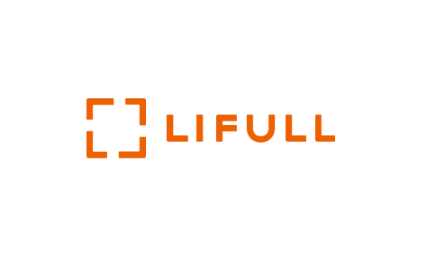
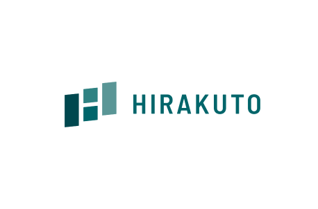
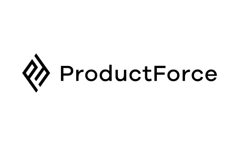
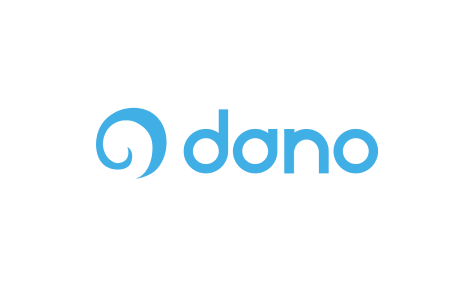
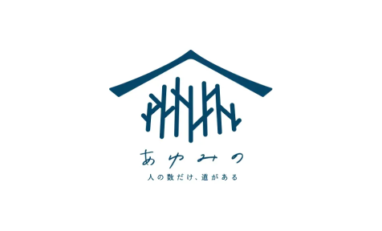
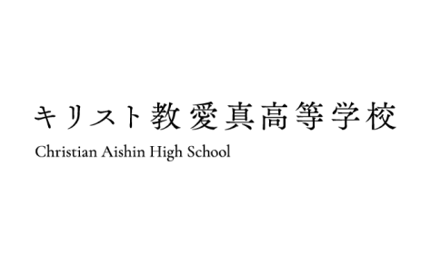
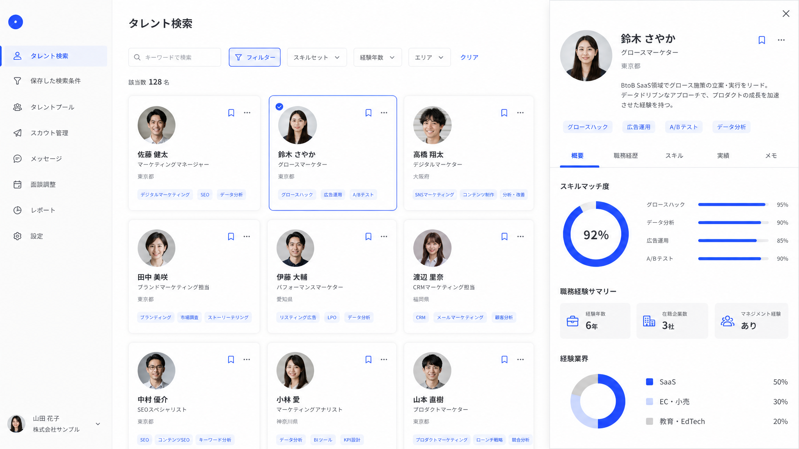
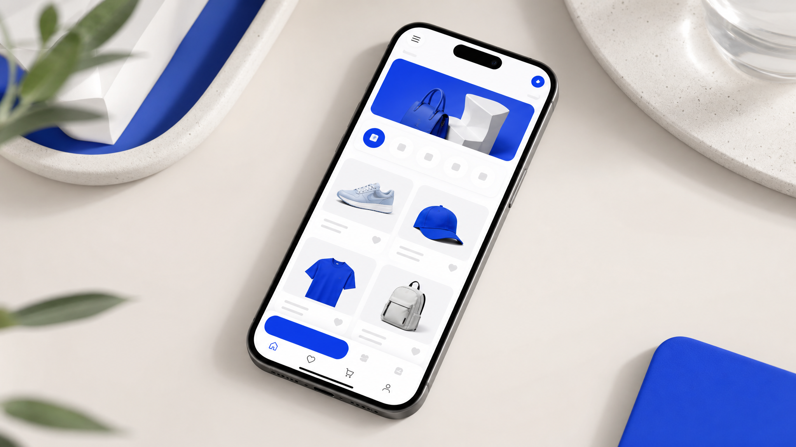

広告・SEO・CRM・データまで。マーケティングに特化し、AIを使いこなす即戦力人材を、必要なときに必要な期間だけアサインします。
規模・業種を問わず、さまざまな企業の現場で活用されています






業種・規模を超えて、マーケの数字が動いています。
採用しても、ツールを入れても、PoCをやっても進まない。原因の多くは、マーケとAIの両方が分かる人材の不在に集約されます。
エンジニアもマーケターもいる。けれど、マーケの成果指標を理解してAIを使いこなせる人材がいない。
マーケ×AIの即戦力は採用市場でも希少。正社員採用のリスクと時間をかけずに戦力化したい。
試してはみたが、施策が一般論で止まる。日々の運用に組み込んで数字を動かすところまで到達しない。
マーケティングの専門性と、AIで動かす実装力。その両方を持つ人材だけをアサインします。
スキルシートをお渡しして終わりではありません。マーケティングの実務経験と、その人がAIで実際に何をできるか。両方を見極めた人材だけをご提案します。だから、現場に入った初日から業務を任せられます。

「業務単位 × どう自動化するか」で設計するため、貴社の業務に合わせた組み立ても同じやり方で進められます。
議事録・案件メモ・既存記事を横断し、検索意図に沿った構成案とドラフトを生成。
過去成果を分析し、次に試すべき訴求パターンをコピー・ラフ単位で複数提示。
Google/Meta広告のAPIから週次数値を取得し、集計と改善提案までセットで生成。
レビュー・SNS・問い合わせログを読み込み、刺さった言葉と不満を抽出。
競合の流入KW・順位変動を取得し、次に書くべきテーマを毎週通知。
リードを分類し、トーンに沿った一次返信を即時送信。担当アサインまで連携。
相談から最短即日で、人材が現場で動き出します。
業務内容・既存ツール・AI活用の現在地を伺います（60分・オンライン）。
専門領域とAI実装スキルから、課題に合う人材をご提案します。
担当人材と直接顔合わせ。AI活用度・カルチャー・実務イメージをすり合わせ。
条件合意後、最短即日で稼働。まずは副業・業務委託としてアサインできます。
まずは1つの業務から小さく始めて、手応えを確認してから対象を広げられます。
入り方も、その後の広げ方も、それぞれ違います。
広告クリエイティブのABテスト案を量産し、配信判断のロジックも自動化。CS問い合わせの一次返信もAIフローに載せ替えました。

ユーザー行動ログを分解し、TOPページのレコメンド枠とレビュー獲得フローを再設計。★5レビューの増加に寄与しました。
カスタマーインタビューから3ペルソナを抽出し、LP訴求軸と広告クリエを一気通貫で設計。配信直後から目標CPAを上回りました。
60分のオンライン相談で、貴社の業務を伺い、最初に任せる業務と、それに合う人材をご提案します。営業電話は一切しません。